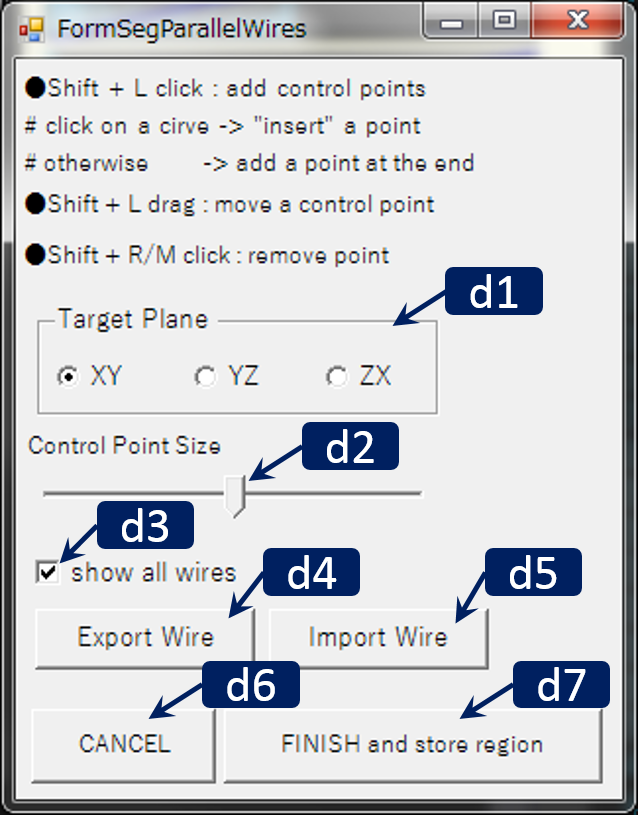

Segmentation Parallel Wires

RoiPainter I/O Visualization Segmentation Download code (github)
Segmentation Parallel Wires
Segmentation Parallel wiresは，平面断面上にスプライン曲線を指定することでROI(関心領域)を分割するツールです．
すべてのスライス上に曲線を引く必要があるため作業効率は悪いですが，専門家のみにしか見分けられないような境界があいまいな領域の分割に向いています．
利用できる断面は xy-, yz-, zx-断面の3つで，それぞれに曲線を配置できます．
配置した曲線の内部領域のみがROIとして抽出されます．
Workflow
- ツールの起動 : "Menu > ModeSwitch > Segmentation Parallel Wires" をクリック.
- ダイアログにより断面(xy,yz,zx)を選択
- マウスホイールにより断面を移動
- Shift + Lクリックによりスプライン曲線の制御点を配置（3点以上の制御点が配置されると自動的に閉じた曲線が生成される）
- ダイアログ右下のFinish And Storeをクリックすると，各平面断面における曲線内部がROIとして抽出される．．
Main Windowの操作方法
- マウス L/M/R ドラッグ : 視点の平行移動/ズーム/回転
- マウス ホイール : 切断面の前後移動
- Ctrl + L ドラッグ : 曲面切断面の生成
- Ctrl + L クリック : 曲面切断面の削除
- Shift + Lクリック : 制御点の配置 （曲線状をクリックすると，制御点の間に新しい制御点を挿入できます．）
- Shift + Lドラッグ : 制御点の移動
- Shift + M/Rクリック : 制御点の削除
Dialogの操作方法
 d1. 断面選択ボタンd2. 制御点のサイズ指定用スライダー
d3. 曲線可視化チェックボックス．すべての曲線表示をOn/offできる．
d4. export wireボタン．現在の曲線(wire)情報をtxtファイルとしてセーブできる．
d4. import wireボタン．上でセーブした曲線情報を読み出せる．
d5. Cancelボタン．現在の分割結果を破棄してツールを終了する
d5. Finishボタン．現在の分割結果を新たなROIとして登録しツールを終了する